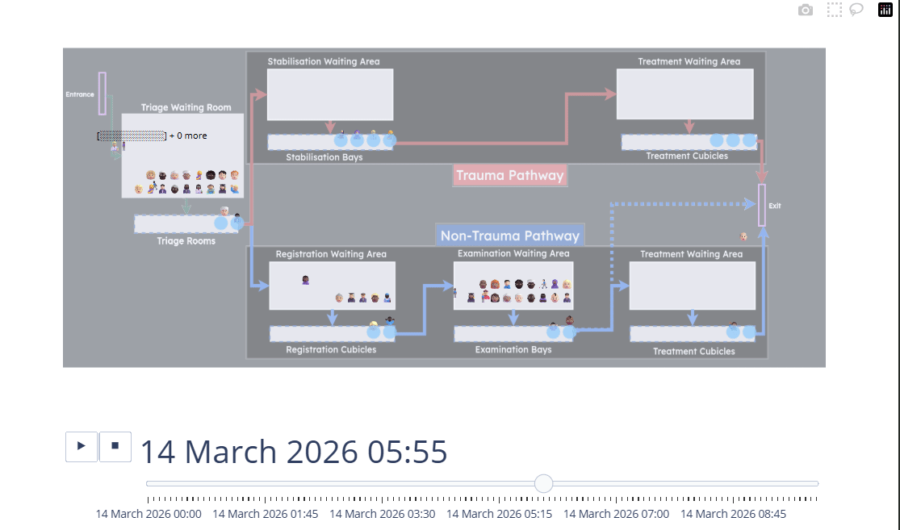
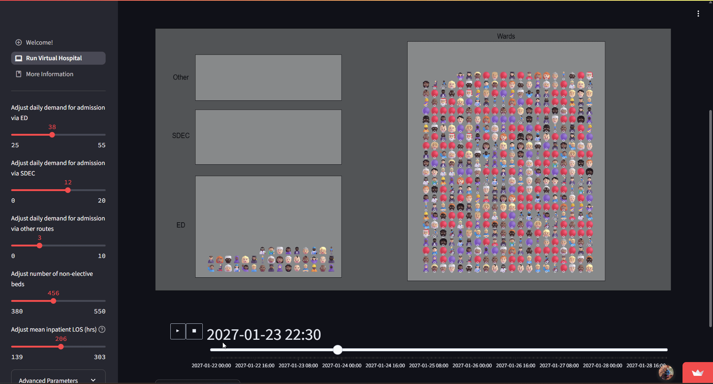
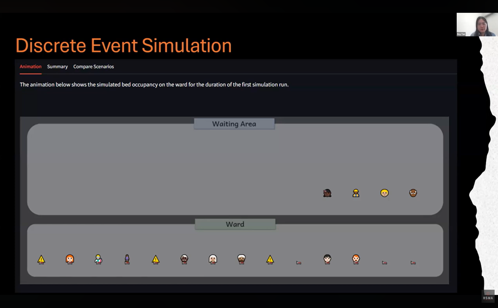
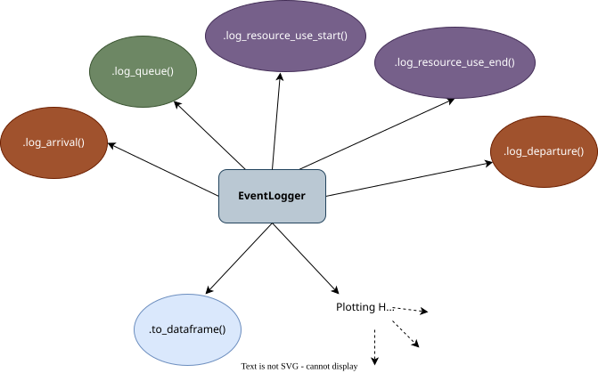
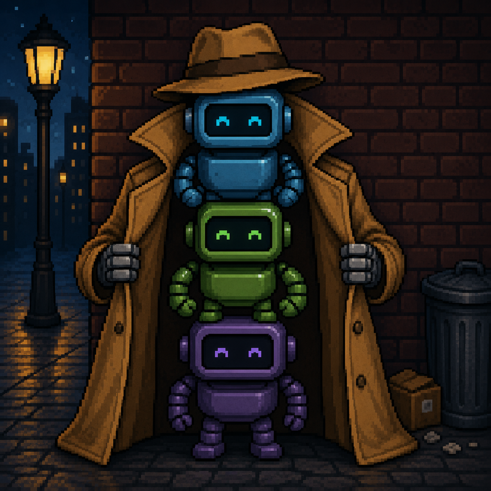

Animaniacs
Bringing your simulations to life with vidigi
Health Service Modelling Associates Programme
Introduction
If a picture is worth a thousand words..
What does a DES animation look like?
Benefits of animations
Helps non-technical users understand what’s going on
Helps get people excited about your model
Helps with debugging
Animations and web apps
A package for animations
What is vidigi?
Vidigi is a package for creating animations of open-source discrete event simulations (like the ones you’ve been building in SimPy).

Who makes vidigi?
Us!
We’ve built it from the ground up with the intention of helping visualise health services.
So if anything isn’t working, or if there is a feature you need that doesn’t exist, the chances are we can sort that for you!
You and your projects can help shape the package!
Extra Benefits of vidigi
- Works in common web application frameworks (which we’ll introduce you to next week!)
- Also works in Quarto
- Or can output as a standalone file
- Generates animations quickly enough to allow users to regenerate an animation after changing parameters
- Supports custom icons
HSMA projects using vidigi
Helena Robinson - Non-Elective Flow Simulation

You can try her app out at non-elective-flow-simulation-coch.streamlit.app
Rey Tan - Acute Ward Bed Occupancy

John Williams - Stroke Bed Unit Modelling
Key Steps in a Vidigi Animation
What do you need?
Add logging steps for arrivals, queues, resource use, and departures
Set up a coordinate grid
Set your animation parameters and generate your animation
Key Parts of Vidigi
EventLogger
Vidigi’s EventLogger class is the powerhouse of the whole shebang.
It allows us to record the key types of events that happen throughout the model.
Using EventLogger
We can import EventLogger from the utils module of lokigi like this.
We then set up an instance of EventLogger like so.
I’ll talk about where we do that in our model a bit later.
Then we record different events like this.
EventLogger’s Logging Types

Why EventLogger?
The Format Vidigi Expects
The EventLogger methods work with all of vidigi’s defaults, making it less likely that you’ll make errors when adding an animation in
Extra Plotting Helpers
Later, we’ll see what other plots - not just animations - that EventLogger can automate for us
Your First Vidigi Animation - a Walkthrough
Adding a Logging Class
The first thing we need to do is set up our logging class.
We will add this when initialising our Model class.
class Model:
def __init__(self, param):
self.param = param
self.env = simpy.Environment()
self.patient_counter = 0
self.nurse = simpy.Resource(self.env, capacity=self.param.num_nurses)
self.patient_inter_dist = Exponential(mean=self.param.mean_patient_inter)
self.nurse_consult_time_dist = Lognormal(
mean=self.param.mean_nurse_consult_time,
stdev=self.param.sd_nurse_consult_time,
)
self.list_of_patients = []
self.mean_q_time_nurse = pd.NA
self.sd_q_time_nurse = pd.NA
self.perc_90_q_time_nurse = pd.NA
self.logger = EventLogger(env=self.env) # NEWAdding Logging Steps - Arrivals
We can now access our logger where we need it by calling self.logger.
We will place all of the logging steps in the .attend_clinic() method.
Let’s first add an arrival logging step!
Because we already gave our logger access to the SimPy env, it handles recording the time the event happened! So the only parameter we need to give our logger is an identifier for this patient, which they already record.
Adding Logging Steps - Queuing
We now record a queuing step with .log_queue()
This time, we also need to decide on a name for our event. This can be anything we like, though it’s good practice to use snake_case (i.e. lowercase with underscores instead of spaces).
The simple way to record activity use
We’re going to start with the simplest way of logging that someone is being seen by the nurse - also treating it as a queue in vidigi’s language.
def attend_clinic(self, patient):
...
with self.nurse.request() as req:
yield req
end_q_nurse = self.env.now
patient.q_time_nurse = end_q_nurse - start_q_nurse
self.logger.log_queue(entity_id=patient.id, event="being_seen_by_nurse") # NEW
sampled_nurse_act_time = self.nurse_consult_time_dist.sample()
yield self.env.timeout(sampled_nurse_act_time)
self.logger.log_queue(entity_id=patient.id, event="nurse_treatment_ends") # NEWBut it’s not a queue?!
Later, we’ll look at vidigi’s more advanced ways of tracking resource use, but treating it as a ‘queue’ step for now allows us to get a simple animation up and running very quickly.
Adding Logging Steps - Departure
Finally, every patient needs one departure event.
It’s important that each patient only has one arrival and one departure event per model run.
Things get messy if they don’t!
(So if there’s any way they can ‘leave and come back’, think carefully about how you’ll handle it…)
All the logging steps
Let’s recap the changes we made.
def attend_clinic(self, patient):
self.logger.log_arrival(entity_id=patient.id) # NEW
start_q_nurse = self.env.now
self.logger.log_queue(entity_id=patient.id, event="nurse_wait_begins") # NEW
with self.nurse.request() as req:
yield req
end_q_nurse = self.env.now
patient.q_time_nurse = end_q_nurse - start_q_nurse
self.logger.log_queue(entity_id=patient.id, event="being_seen_by_nurse") # NEW
sampled_nurse_act_time = self.nurse_consult_time_dist.sample()
yield self.env.timeout(sampled_nurse_act_time)
self.logger.log_queue(entity_id=patient.id, event="nurse_treatment_ends") # NEW
self.logger.log_departure(entity_id=patient.id) # NEWAccessing our event log
We’ll want to grab out our event log as a pandas dataframe.
It’s neat to set up a little helper method in our Model class to do that.
Vidigi provides the to_dataframe() method for our convenience. This will look at the EventLogger object, find where it stores the event logs, and convert it into this format for us.
The new class - Animation
Our models contain some key classes: Params, Patient, Model
(also Trial, but in this first example, we’re just working at the level of a single model - we’ll look at wiring Vidigi into Trial a bit later)
We’re now going to define a brand new class called Animation.
Setting up a Layout Grid
The next thing we’ll define - still in our init method - is a layout grid.
For each event we want in our animation, we create an EventPosition object and pass four things:
- the event name (which should match what we called it in the logger)
- an x coordinate for the front of that queue
- a y coordinate for the front of that queue
- a nicer label to use in the animation
Coordinates
[TODO: create a blank axis]
[TODO: grab full fig from vidigi paper]
Arrival and Departure Events
Behind the scenes, EventLogger always gives these the same event name if you use .log_arrival() and .log_departure().
create_event_position_df
We pass a list of all our EventPosition objects.
Remember - a Python list uses [] with each item separated by a ,
create_event_position_df(
[
EventPosition(
event="arrival", x=0, y=350, label="Entrance"
),
EventPosition(
event="nurse_wait_begins", x=200, y=250, label="Waiting for Nurse"
),
EventPosition(
event="being_seen_by_nurse", x=200, y=150, label="Being Seen By Nurse"
),
# We don't need to visualise the 'nurse_treatment_ends' step
# as the timing will be identical to the depart step
EventPosition(
event="depart", x=200, y=50, label="Exit"
)
]
)The full Grid in situ
We’ll bind this to self.layout.
class Animation:
def __init__(self, params, event_log):
self.params = params
self.event_log = event_log
self.layout = create_event_position_df(
[
EventPosition(
event="arrival", x=0, y=350, label="Entrance"
),
EventPosition(
event="nurse_wait_begins", x=200, y=250, label="Waiting for Nurse"
),
EventPosition(
event="being_seen_by_nurse", x=200, y=150, label="Being Seen By Nurse"
),
# We don't need to visualise the 'nurse_treatment_ends' step
# as the timing will be identical to the depart step
EventPosition(
event="depart", x=200, y=50, label="Exit"
)
]
)Generating the Animation
Now, we just need a small function to call vidigi’s animation creation logic.
Calling the animation
my_params = Param()
my_model = Model(my_params)
my_model.run_model()
patient_df = my_model.convert_entity_list_to_dataframe(my_model.list_of_patients)
my_model.calculate_run_results(patient_df)
my_event_log = my_model.get_vidigi_event_log()
print(my_event_log.head(10))
my_animation = Animation(my_params, my_event_log)
my_animation.generate_animation()What does the event log look like?
What does the animation look like?
Advanced Vidigi Elements - Resource Use
Custom Resource Classes
Why do we need these?
Swapping in vidigi classes
Replace
with
OR
:::
Replace
with
and do a find and replace for
Resource in your code, changing it to VidigiStore
Recording
Exercise 1
Vidigi Exercise 1
You will be working with the model [TODO: model path] and the notebook [TODO: notebook path].
- Add a logger
- Add the required logging steps
- arrival
- queue
- resource use
- departure
- Set up and generate the animation
- you have been provided with a starter template for the layout of your animation
Extensions
- Try increasing the arrival rate [TODO: To x]. Does the animation still look ok? Does it take longer to generate?
- Try tweaking the EventPositions. Do you think a different layout might look better?
- [TODO: Third extension]
Incorporating the Trial Class
Trial, trial again
So far we’ve been working with a vidigi model that only runs a single replication.
However, we saw in earlier sessions how important it is to run multiple replications in simulation.
So how can we make vidigi play nicely with the trial class?
The big reveal…
Vidigi’s animate_activity_log() function that we’ve been using so far is actually three functions in a trenchcoat!

This function looks over the logs and creates a minute-by-minute breakdown of where everyone currently in the system is at that moment in time.
(or over whatever time interval you specify)
This function assigns everyone their consistent icon that they will have throughout the animation
It also works out their physical position in the animation at each time point, assigning them coordinates that match their position in a queue or the resource they are using
This is the final step that calls on Plotly to turn it into an animation
Why bother?
Vidigi’s three step process allows us to poke our nose in part way through and modify the animation logic
Things like - changing - custom pathing
Advanced Feature Showcase
Icons by patient priority
Adding patient waits or LOS
Custom pathing
Exercise 2
Vidigi Exercise 2
You will be working with the model [TODO: model path] and the notebook [TODO: notebook path]. This model already has the logging steps set up, as well as a simple one-step animation.
- Modify the code to account for the presence of the
Trialclass - Generate a process map of this system
- Switch to using the three-step animation process
- Customise the icons so that high-priority patients are displayed differently
- Create a custom background in draw.io (or your preferred software) and apply it to your animation
Extensions
- Try adding some additional information to your patients. What about their wait time, or something else you think would be useful to include?
Longer-term animation with the governor model?